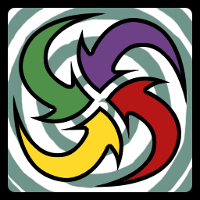

17 |
Emblemas Tribales |
 |
Hay dos tipos de cartas:
Cartas de Símbolos
Hay diferentes símbolos en las cartas. Estos símbolos vienen en cuatro colores diferentes. Cuando aparecen dos cartas de símbolos idénticas se presenta un duelo. Usualmente, solo el símbolo es importante, no el color. EXCEPTO cuando la carta especial de IGUALACIÓN DE COLOR aparece...
Estas son algunas de las formas notablemente diferentes que encontrarás en las cartas - ¡observa las sutiles semejanzas!
Cartas Flecha Hay tres tipos de Cartas Flecha. Estas son cartas especiales que no provocan Duelos regulares sino que cambian las reglas del juego.
Carta Voltear Todas Cuando la carta VOLTEAR TODAS se muestra, se iniciará una cuenta regresiva. Al final de la cuenta regresiva, todos los jugadores voltearán automáticamente una carta. Cuando esto ocurra, debes estar pendiente si se presentan duelos.
Carta Agarre Rápido Cuando aparece una carta AGARRE RÁPIDO, cualquier jugador tiene la oportunidad de agarrar el Tótem. El primer jugador en agarrar el Tótem pone todas sus cartas descubiertas en El Monte.
Carta Igualación de Color Para juegos de 4 jugadores o más, cuando un jugador descubre una carta IGUALACIÓN DE COLOR, los jugadores con colores que coinciden deben intentar agarrar el Tótem sin importar el símbolo de sus cartas. El jugador que volteó la carta IGUALACIÓN DE COLOR no participa en la ronda actual.

Para juegos con 3 jugadores, las cartas Igualación de Color se retiran del juego. En cambio, cuando todas las cartas descubiertas son del mismo color, la regla AGARRE RÁPIDO se activa.
La coincidencia de color dura hasta que un jugador agarre o vuelque el Tótem, o hasta que se muestre otra Carta Flecha.
|


 |
 |
 |